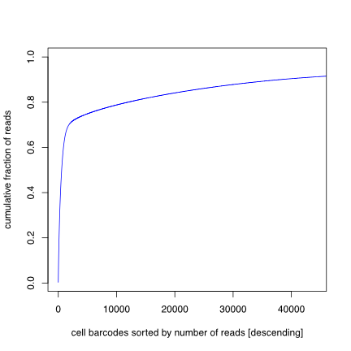
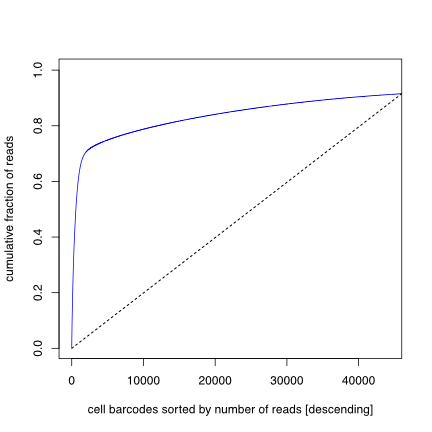
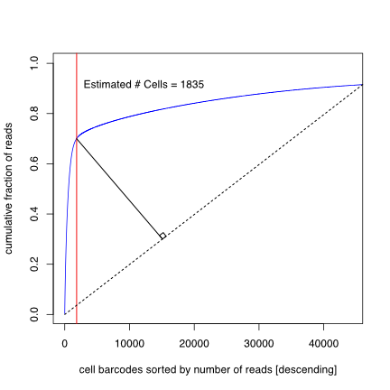
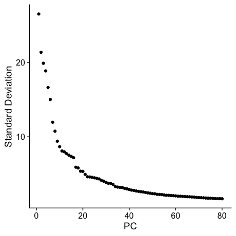
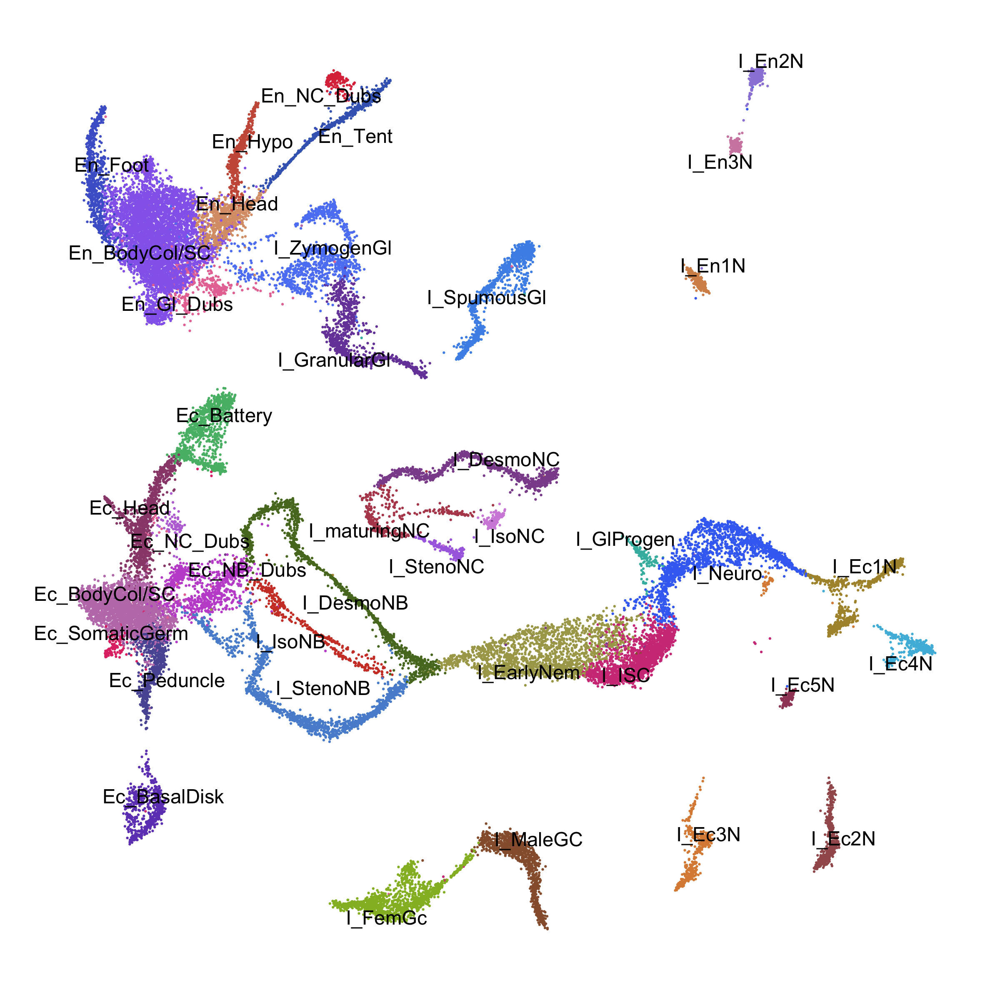
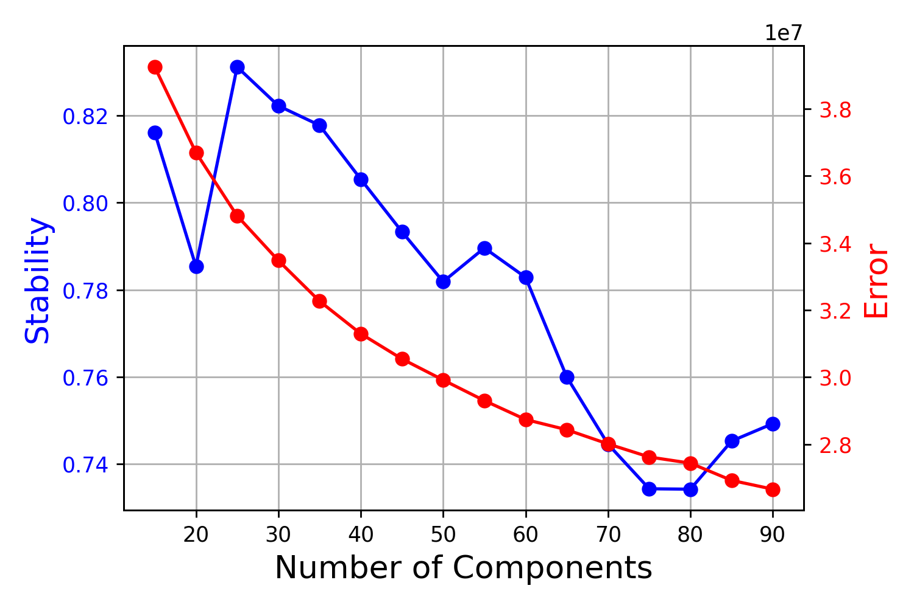
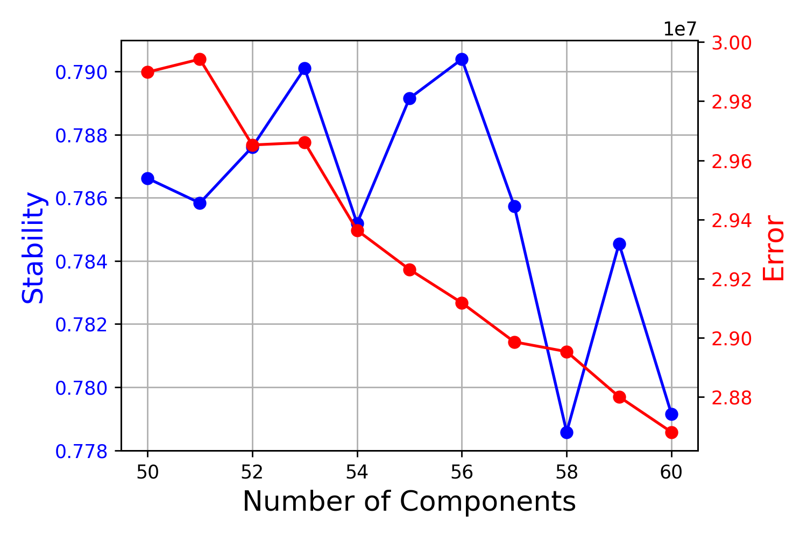
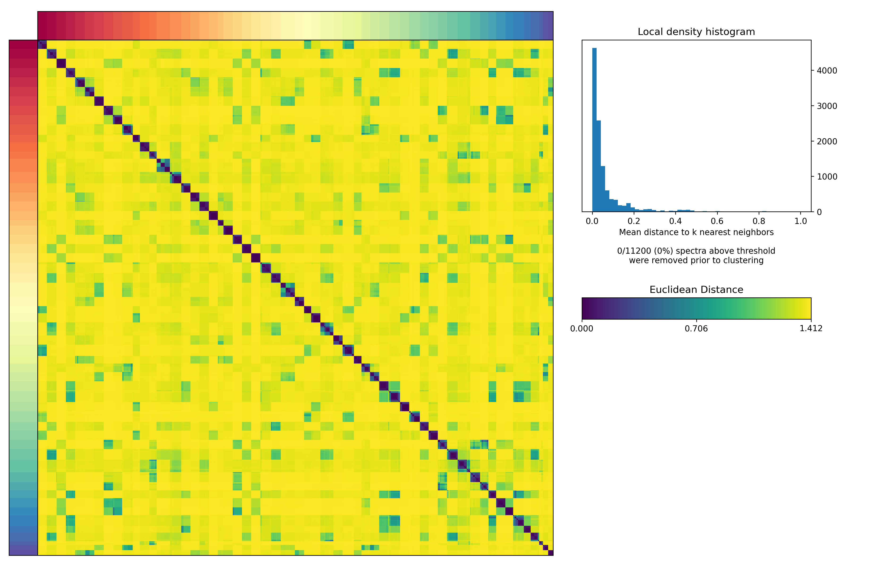
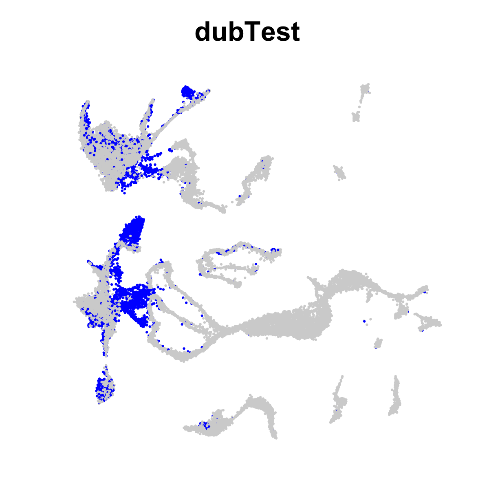
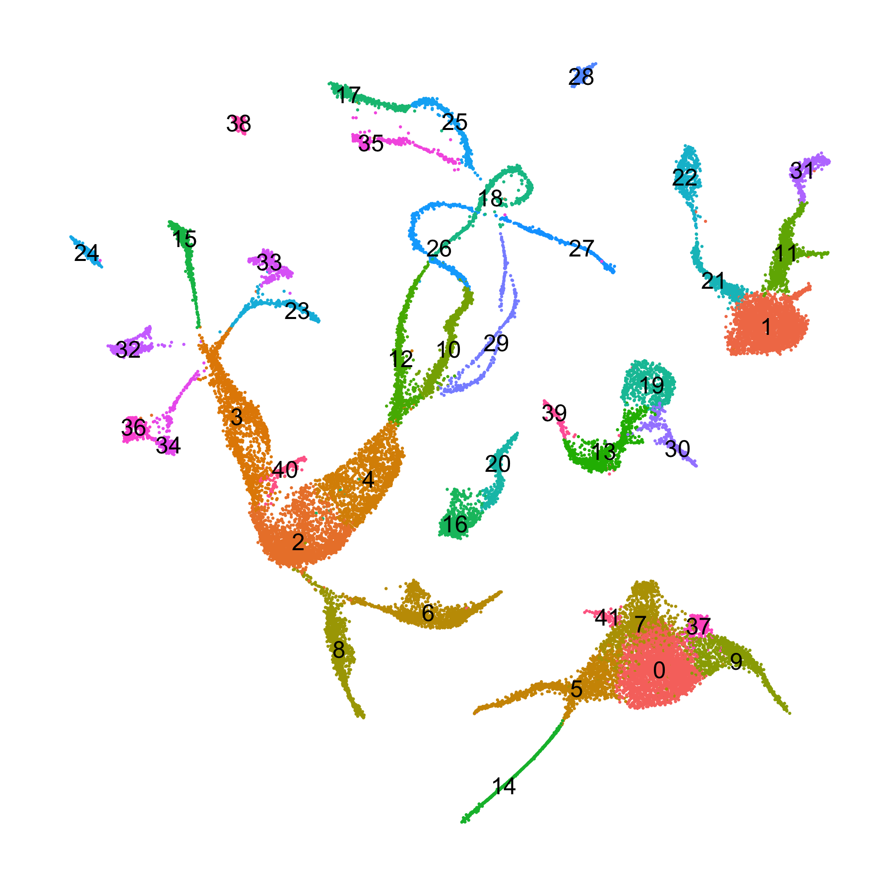

Aligning, Processing, and Analyzing Hydra Drop-seq Data
This document covers the re-mapping and re-analysis of the Hydra single cell atlas using the strain AEP H. vulgaris genome as a reference. This document covers initial read mapping, cell filtering and QC, clustering, plotting, co-expression analysis, doublet removal, and final annotation of the Hydra drop-seq dataset originally published in Siebert et al. (2019) (raw data available here).
Aligning, Processing, and Analyzing Hydra Drop-seq DataMapping Drop-seq Data to the AEP Assembly TranscriptomeFiltering Cell Barcodes by Read DepthInitial ClusteringIdentifying Gene Co-Expression Programs Using Non-Negative Matrix FactorizationPerforming a Course Sweep of K ValuesPerforming a Fine Sweep of k ValuesIdentifying DoubletsReclustering the Doublet-Free DatasetRemoving Some Lingering Problematic ClustersFinal Clustering and AnnotationPlotting Metagene Usage in the Hydra AtlasFiles Associated with This Document
Mapping Drop-seq Data to the AEP Assembly Transcriptome
To map our raw Drop-seq reads to the AEP assembly, we made use of tools provided in the Drop-seq toolkit provided by the Broad Institute (v2.4).
First we prepped the reference files for mapping. We used the transcript sequences for the longest isoforms for each gene (HVAEP1.tran.longestIso.fa). We opted to use transcriptomic sequence as opposed to genomic sequence because it eliminated the possibility of mapping to off-target intronic and intergenic regions. We also supplemented these sequences with mitochondrial genes, whose expression levels can provide a useful readout of stress in a cell. The final file was called HVAEP1.tran.final.mito.fasta
The Drop-seq Tools pipeline requires a gtf file for the reference sequence, even if it's not genomic sequence. This required the generation of a custom gtf file. We generated a gtf file from our gff3 reference file containing only the longest isoform of each gene (generated in the AEP Genome Annotation step) using AGAT:
agat_convert_sp_gxf2gxf.pl -g HVAEP1.GeneModels.longestIso.gff3 \ -o HVAEP1.GeneModels.longestIso.gtf \ --gvi 3 --gvo 2.5We then modified the resulting gtf using the following R script:
(*01_mapping/makeTranGtf.R)
xlibrary(rstudioapi)library(Biostrings)library(plyr)
setwd(dirname(rstudioapi::getActiveDocumentContext()$path))
tranSeq <- readDNAStringSet('HVAEP1.tran.longestIso.fa')
#get the lengths of all sequences in the fasta filetranSeq.dim <- data.frame(ID = names(tranSeq), length = nchar(tranSeq))
#get transcript namestranSeq.dim$ID <- gsub(' .*','',tranSeq.dim$ID)
inGtf <- read.delim('HVAEP1.GeneModels.longestIso.gtf',header = F, skip = 1)
#pull only the transcript rows from the gtfinGtf <- inGtf[inGtf$V3 == 'mRNA',]
#set the chrom column to be the transcript IDinGtf$V1 <- gsub('.*(HVAEP1_T\\d+[.]\\d+).*','\\1',inGtf$V9)
#use the length info to set the end coordinate for each transcriptinGtf$V5 <- mapvalues(inGtf$V1, from = tranSeq.dim$ID, to = tranSeq.dim$length)
#set all start coordinates to oneinGtf$V4 <- 1
#set all strand info to +inGtf$V7 <- '+'
#make all features exonsinGtf$V3 <- 'exon'
inGtf$new9 <- inGtf$V9
#some tag reformatting to fix the specific requirements of the Drop-seq pipelineinGtf$new9 <- gsub('ID[^;]+;','',inGtf$new9)inGtf$new9 <- gsub('Parent[^;]+; ','',inGtf$new9)
inGtf$new9 <- gsub('HVAEP','"HVAEP',inGtf$new9)inGtf$new9 <- gsub(' ;','";',inGtf$new9)inGtf$new9 <- gsub(' $','"',inGtf$new9)
inGtf$new9 <- paste0(inGtf$new9,';',gsub('_id','_name',inGtf$new9))
inGtf$V9 <- inGtf$new9
write.table(inGtf[,1:9], file = 'HVAEP1.transcriptome.gtf', row.names = F, col.names = F, quote = F, sep = '\t')
We then appended mitochondrial genes to both the transcriptome fasta file (creating HVAEP1.tran.final.mito.fasta) and the transcriptome gtf file (creating HVAEP1.transcriptome.mito.gtf)
We used the create_Drop-seq_reference_metadata.sh script from Drop-seq Tools to prep the reference files for mapping. We had to make one minor change because of an issue with the STAR indexing step. We named the modified script create_Drop-seq_reference_metadata_mod.sh. We made the following change (output from diff create_Drop-seq_reference_metadata.sh create_Drop-seq_reference_metadata_mod.sh):
xxxxxxxxxx147c147< --sjdbGTFfile $output_gtf --sjdbOverhang 100---> --sjdbGTFfile $output_gtf --sjdbOverhang 100 --genomeSAindexNbases 13 --runThreadN 16We ran the modified pipeline using the following script:
(01_mapping/slurm_metadata_mod.sh)
x
#SBATCH --job-name=metadata#SBATCH -c 16 #SBATCH -t 1-0#SBATCH --mem=24G#SBATCH --error=logs/metadata.err#SBATCH --output=logs/metadata.out
module load starmodule load samtools
bash create_Drop-seq_reference_metadata_mod.sh \ -n HVAEP1.tran.final.mito.ds \ -r HVAEP1.tran.final.mito.fasta \ -s Hydra \ -g HVAEP1.transcriptome.mito.gtf \ -v \ -d /group/julianolab/analyses/dropseq/Drop-seq_tools-2.4.0 \ -t /group/julianolab/analyses/dropseq/HVAEP1_transcriptome_final/dropseq/tempWe next prepared the fastq files for mapping. The Drop-seq Tools alignment pipeline requires bam files instead of fastq files, so we used the following script to call the Picard FastqToSam function to pool read 1 and read 2 from each sample into a single bam file.
(01_mapping/dropseq_FastqtoSam.sh)
xxxxxxxxxx#SBATCH --job-name=ds#SBATCH -c 8#SBATCH --mem=30G#SBATCH --array=1-11#SBATCH --error=logs/fstqsam.%A_%a.err#SBATCH --output=logs/fstqsam.%A_%a.out#SBATCH -t 2-00:00:00
# ======================================== #### DEFINE PATHS NEEDED FOR THE PIPELINE #### ======================================== #
# Path to .jar files for Picard tools#picard_path="/seq/software/picard/current/bin/"
export PATH=/group/julianolab/analyses/dropseq/jre1.8.0_121/bin:$PATH
module load bowtie2module load samtools
picard_path="/group/julianolab/analyses/dropseq/Drop-seq_tools-2.4.0/3rdParty/picard"
# Path to Hydra genome metadata (bowtie indexes, fasta files,# .gtf, .refFlat, etc.)# NOTE: paths include prefix of these files as well as directory.
# Path to dropseq tools
dropseq_tools="/group/julianolab/analyses/dropseq/Drop-seq_tools-2.4.0"
# Path to files to work on (configure these)fastq_dir="/group/julianolab/data/hydra_ds/" #fastq directorymain_dir="/group/julianolab/analyses/dropseq/HVAEP1_transcriptome_final/" temp_dir="/group/julianolab/analyses/dropseq/HVAEP1_transcriptome_final/temp/"file_list="/group/julianolab/analyses/dropseq/HVAEP1_transcriptome_final/file_list_all.txt"
# Paths that are automatically determined#file_prefix=`sed -n "$SGE_TASK_ID"p "${file_list}" | cut -f 1`file_prefix=`sed -n "$SLURM_ARRAY_TASK_ID"p "${file_list}" | cut -f 1`work_dir="${main_dir}${file_prefix}/"temp_work_dir="${temp_dir}${file_prefix}/"fastq_path="${fastq_dir}/${file_prefix}"log_dir="${work_dir}/logs/"
# What sections of the pipeline do you want to run?# 0 = OFF# 1 = ONrun_1=1 # 1: Convert FASTQ to SAM
# =================================== #### DEFINE FUNCTIONS USED IN SCRIPT #### =================================== #
# Echo command and then execute it.function v_exe{ echo "$1" eval "$1" || error_exit "Cannot execute command: $1"}# Echo a message to both stdout and stderr to mark parts of pipelinefunction echo_both{ echo "$1" echo "$1" > /dev/stderr}# Function to preserve the logs after each stepfunction save_logs{ v_exe "cp ${main_dir}/logs/*.${SLURM_ARRAY_JOB_ID}_${SLURM_ARRAY_TASK_ID}.out ${log_dir}/${file_prefix}.${1}.out" v_exe "cp ${main_dir}/logs/*.${SLURM_ARRAY_JOB_ID}_${SLURM_ARRAY_TASK_ID}.err ${log_dir}/${file_prefix}.${1}.err"}
# ================================= #### PIPELINE ACTION IS BELOW HERE #### ================================= #
# Get the work & log directories readymkdir -p ${log_dir}#rm ${log_dir}/*v_exe "mkdir -p ${temp_dir}"v_exe "mkdir -p ${temp_work_dir}"v_exe "mkdir -p ${work_dir}"
# First, we have to convert the raw FASTQ files to SAM format for the Dropseq tools# to work on.if [ "${run_1}" -eq 1 ]; then echo_both "" echo_both "----- 1: FASTQ to SAM -----" v_exe "java -Xmx4g -jar ${picard_path}/picard.jar FastqToSam FASTQ=${fastq_path}_R1_001.fastq.gz FASTQ2=${fastq_path}_R2_001.fastq.gz SAMPLE_NAME='${file_prefix}' OUTPUT=${temp_work_dir}/${file_prefix}.bam" save_logs "01"fiWe then used the Drop-seq_alignment.sh script included with Drop-seq Tools to map the bam files for each of our drop-seq libraries using the following script:
(01_mapping/slurm_Drop-seq_alignment.sh)
xxxxxxxxxx#SBATCH --job-name=dsalign#SBATCH -c 16 #SBATCH -t 4-0#SBATCH --mem=30G#SBATCH --array=0-15#SBATCH --error=logs/ds.%A_%a.err#SBATCH --output=logs/ds.%A_%a.out
array=(D01-D1_S1 D01-P2_S4 \D02-CO_S2 D02-P1_S3 D02-PB_S4 \D03-KI_S1 D03-MA_S2 D03-FM_S3 \D06-FM_S1 D06-MA_S3 D06-KI_S4 \D11-PO_S1 D11-BU_S2 D12-N1_S1 D12-N2_S2 \D12-UN_S0) \
file_prefix=${array[$SLURM_ARRAY_TASK_ID]}echo "$file_prefix"
module load starbash Drop-seq_alignment.sh \ -g STAR \ -r HVAEP1.tran.final.mito.ds.fasta.gz \ -d /group/julianolab/analyses/dropseq/Drop-seq_tools-2.4.0 \ -o out/${file_prefix} \ -t temp/${file_prefix} \ -k \ bam/${array[$SLURM_ARRAY_TASK_ID]}.1.bamThis created subdirectories in the out directory for each library that was mapped containing among other things the final bamfile of mapped reads (final.bam).
Filtering Cell Barcodes by Read Depth
Only a small minority of beads in a Drop-seq run will end up in a droplet that also contains a cell. This means that a huge portion of cell barcodes in a Drop-seq library will be from beads that were only exposed to 'ambient' contaminating RNA and will contain no useful information. To filter out these 'junk' cell barcodes, we needed to generate tables for each library that ranked cell barcodes by the number of reads they recieved, from most reads to least reads. To do this, we used the BamTagHistogram command from Drop-seq Tools:
(01_mapping/getCellCounts.sh)
xxxxxxxxxx#SBATCH --job-name=readCounts#SBATCH -c 1 #SBATCH -t 60-0#SBATCH --mem=8G#SBATCH -p med#SBATCH --error=readCounts.err#SBATCH --output=readCounts.out
for arg in */final.bamdo echo $arg
outDir="${arg/\/final.bam/}"
echo $outDir
/group/julianolab/analyses/dropseq/Drop-seq_tools-2.4.0/BamTagHistogram \ I=$arg \ O="$outDir"/out_cell_readcounts.txt.gz \ TAG=XCdonePlotting the cumulative sum of reads from these tables reveals a curve with a distinct "elbow", an inflection point where the curve rapidly plateaus. This elbow is the transition from 'real' cell barcodes to 'junk' barcodes. To identify the inflection point in a reproducible and relatively unbiased way, we used a geometric approach. We plotted the read count tables to create an elbow plot:

We then drew a line from the origin to the point at which the curve reached 85% of total reads on the y-axis:

We then found the point on the elbow plot that was farthest from this diagonal. The X-coordinate of this point determined the total number of 'real' cell barcodes in the library:

This was done using the following R script:
(01_mapping/makeElbowPlots.R)
xxxxxxxxxx#!/usr/bin/env Rscript
#distance functionsdistancePointLine <- function(x, y, slope, intercept) { ## x, y is the point to test. ## slope, intercept is the line to check distance. ## ## Returns distance from the line. ## ## Returns 9999 on 0 denominator conditions. x1 <- x-10 x2 <- x+10 y1 <- x1*slope+intercept y2 <- x2*slope+intercept distancePointSegment(x,y, x1,y1, x2,y2)}
distancePointSegment <- function(px, py, x1, y1, x2, y2) { ## px,py is the point to test. ## x1,y1,x2,y2 is the line to check distance. ## ## Returns distance from the line, or if the intersecting point on the line nearest ## the point tested is outside the endpoints of the line, the distance to the ## nearest endpoint. ## ## Returns 9999 on 0 denominator conditions. lineMagnitude <- function(x1, y1, x2, y2) sqrt((x2-x1)^2+(y2-y1)^2) ans <- NULL ix <- iy <- 0 # intersecting point lineMag <- lineMagnitude(x1, y1, x2, y2) if( lineMag < 0.00000001) { warning("short segment") return(9999) } u <- (((px - x1) * (x2 - x1)) + ((py - y1) * (y2 - y1))) u <- u / (lineMag * lineMag) if((u < 0.00001) || (u > 1)) { ## closest point does not fall within the line segment, take the shorter distance ## to an endpoint ix <- lineMagnitude(px, py, x1, y1) iy <- lineMagnitude(px, py, x2, y2) if(ix > iy) ans <- iy else ans <- ix } else { ## Intersecting point is on the line, use the formula ix <- x1 + u * (x2 - x1) iy <- y1 + u * (y2 - y1) ans <- lineMagnitude(px, py, ix, iy) } ans}
distancePointLineTest <- function() { if(abs(distancePointSegment( 5, 5, 10, 10, 20, 20) - 7.07106781186548)>.0001) stop("error 1") if(abs(distancePointSegment( 15, 15, 10, 10, 20, 20) - 0)>.0001) stop("error 2") if(abs(distancePointSegment( 15, 15, 20, 10, 20, 20) - 5)>.0001) stop("error 3") if(abs(distancePointSegment( 0, 15, 20, 10, 20, 20) - 20)>.0001) stop("error 4") if(abs(distancePointSegment( 0, 25, 20, 10, 20, 20) - 20.6155281280883)>.0001) stop("error 5") if(abs(distancePointSegment(-13, -25, -50, 10, 20, 20) - 39.8808224589213)>.0001) stop("error 6") if(abs(distancePointSegment( 0, 3, 0, -4, 5, 0) - 5.466082)>.0001) stop("error 7") if(abs(distancePointSegment( 0, 9, 0, -4, 0, 15) - 0)>.0001) stop("error 8") if(abs(distancePointSegment( 0, 0, 0, -2, 2, 0)^2 - 2)>.0001) stop("error 9") return(TRUE)}
inF <- list.files(pattern='out_cell_readcounts.txt.gz',full.names = T, recursive = T)
inF <- inF[!is.na(inF)]
for(i in 1:length(inF)) { a=read.table(inF[i], header=F, stringsAsFactors=F) x=cumsum(a$V1) x=x/max(x)
#get slope checkVal <- min(which(x > 0.85))
inSlope <- x[checkVal]/checkVal
testDF <- data.frame(x = 1:checkVal, y = x[1:checkVal])
testDF$res <- 0
for(j in 1:nrow(testDF)){ testDF$res[j] <- distancePointLine(testDF[j,'x'],testDF[j,'y'],inSlope,0) }
cutoff <- which.max(testDF$res)
dirName=gsub('[.]/(.*)/.*','\\1',inF[i])
newName=paste0(dirName,'/',dirName,'.pdf')
pdf(newName, width = 6, height = 6)
plot(1:length(x), x, type='l', col="blue", xlab="cell barcodes sorted by number of reads [descending]", ylab="cumulative fraction of reads",xlim=c(1,checkVal*2))
abline(v=cutoff)
text(checkVal,0.5,paste0('estimated # Cells = ',cutoff))
dev.off()
cellCountName <- gsub('.pdf','_cellCount.txt',newName) write.table(cutoff,file=cellCountName,col.names = F, row.names = F, quote = F)}We then passed the estimated cell number determined above to the DigitalExpression function from Drop-seq Tools. This function outputs a digital gene expression (DGE) matrix that contains read counts for the specified number of cells. The specific cell barcodes exported into this matrix are determined by read depth, with the highest depth cells being used first, and lowest depth cells being used last.
(01_mapping/makeDGE.sh)
xxxxxxxxxx#SBATCH --job-name=makeDGE#SBATCH -c 1 #SBATCH -t 60-0#SBATCH --mem=8G#SBATCH -p med#SBATCH --error=makeDGE.err#SBATCH --output=makeDGE.out
for arg in */final.bamdo echo $arg
outDir="${arg/\/final.bam/}"
echo $outDir
cellCount=$(cat $outDir/*cellCount.txt)
echo $cellCount
/group/julianolab/analyses/dropseq/Drop-seq_tools-2.4.0/DigitalExpression \ I=$arg \ O="$outDir"/"$outDir".dge.txt.gz \ NUM_CORE_BARCODES="$cellCount"doneThe resulting DGE files are formatted as gene-by-cell matrices. These were used as the initial input into the Seurat Analysis below.
Initial Clustering
We imported the drop-seq data formatted as DGE matrices into Seurat (v4.1.0), did additional filtering to remove low quality cells, removed batch effects in the different libraries, performed Louvain clustering, and generated an initial UMAP plot. All of this (as well as contents of the next section) was done within one large R script (initGenomeDsSeurat.R). For the purposes of this document, we have broken this script into chunks to simplify the explanation process.
After some initial setup for the R session, our first step was to import the DGE matrices from each Drop-seq library as individual Seurat objects. During this step, we also performed some additional filtering to remove low quality cells by removing barcodes with fewer than 300 or greater than 7500 unique molecular identifiers (UMIs), or fewer than 500 or greater than 75000 reads.
(snippet from 02_initClust/initGenomeDsSeurat.R)
xxxxxxxxxx####Initial R session Setup####library(Seurat)library(tidyverse)library(rstudioapi)library(glmGamPoi)library(plotly)library(RColorBrewer)library(patchwork)library(plyr)
#utility to convert transcript ID to gene IDt2g <- function(x){ vapply(x, function(y) gsub('HVAEP1_T(\\d+)[.]\\d','HVAEP1-G\\1',y),"")}
setwd(dirname(getActiveDocumentContext()$path))
####Importing Read Tables####
#get list of count matrix files (include path in name)readMats <- list.files(pattern = 'dge.txt.gz', recursive = T, full.names = T)
#read in each individual read matrix, generate a separate seurat object for each, and do some initial filteringinDs <- lapply(readMats, function(x) { y <- read.delim(x,stringsAsFactors = F,header = T, row.names = 1) #get batch name from parent folder of read matrix libName <- gsub('[.]\\/(D\\d+[^\\/]+)\\/.*','\\1',x) #apply batch names to cell barcodes to prevent redundant barcodes colnames(y) <- paste0(colnames(y),'-',libName) #add mt IDs rownames(y) <- gsub('^NC','MT-NC',rownames(y)) #initialize seurat object tmpDS <- CreateSeuratObject(counts = y, project = libName, min.cells = 3, min.features = 200) #perform preliminary filtering subset(tmpDS, subset = nFeature_RNA > 300 & nFeature_RNA < 7500 & nCount_RNA > 500 & nCount_RNA < 75000)})We then integrated these separate Seurat objects using a reciprocal PCA analysis. This removed most batch effects that could cause cells to cluster because of technical reasons (e.g., differential expression of stress genes).
(snippet from 02_initClust/initGenomeDsSeurat.R)
xxxxxxxxxx####Batch Correction#####In the next section we align the individual samples and perform batch correction using reciprocal PCA
#normalize data using SCTransforminDs <- lapply(inDs, FUN = SCTransform, method = "glmGamPoi")
#use reciprocal PCA to perform batch effect correction and integrate the different libraries.features <- SelectIntegrationFeatures(inDs)
inDs <- PrepSCTIntegration(object.list = inDs, anchor.features = features)
inDs <- lapply(X = inDs, FUN = RunPCA, features = features, verbose = F)
dsAnchors <- FindIntegrationAnchors(object.list = inDs, normalization.method = "SCT", anchor.features = features, dims = 1:35, reduction = "rpca", k.anchor = 5)
ds <- IntegrateData(anchorset = dsAnchors, normalization.method = "SCT", dims = 1:35)
rm(dsAnchors,inDs)We next calculated the first 80 principal components of the integrated dataset and plotted the variance explaned by each component. This allowed us to estimate the approximate dimensionality of the dataset.
(snippet from 02_initClust/initGenomeDsSeurat.R)
xxxxxxxxxx#determining the dimensionality of the datads <- RunPCA(ds, npcs = 80)
ElbowPlot(ds,ndims = 80)

We opted to use a relatively high number of principle components for our initial clustering (60). We used these first 60 PCs to generate a UMAP plot and to find clusters using the Louvain algorithm
(snippet from 02_initClust/initGenomeDsSeurat.R)
xxxxxxxxxxds <- RunUMAP(ds, reduction = "pca", dims = 1:60, min.dist = 0.2, spread=0.2, seed.use = 521, n.neighbors = 45)ds <- FindNeighbors(ds, reduction = "pca", dims = 1:60)ds <- FindClusters(ds, resolution = 1.25, graph.name = 'integrated_snn')
DimPlot(ds,label = T) + NoLegend() + NoAxes()
To get a sense of the cellular identity of these clusters, we used a panel of cell type markers (listed in markerPanel.csv) that were validated when the Hydra atlas was first published.
(snippet from 02_initClust/initGenomeDsSeurat.R)
xxxxxxxxxx#plot markersmarkList <-read.csv('markerPanel.csv', header = F)
gg <- FeaturePlot(ds,t2g(markList[1,1]),order = T) + NoLegend() + NoAxes() + labs(subtitle = paste0(markList[1,2],' ',markList[1,3]))
for(i in 2:nrow(markList)){ subGG <- FeaturePlot(ds,t2g(markList[i,1]),order = T) + NoLegend() + NoAxes() + labs(subtitle = paste0(markList[i,2],' ',markList[i,3])) gg <- gg + subGG}
png('initReclustMarks.png',width = 25,height = 25,units = 'in',res = 300)gg + plot_layout(ncol = 6)dev.off()
Based on the expression patterns of these markers, we then annotated this UMAP by cell type:
xxxxxxxxxx
clusterNames <- data.frame(clusterNumber=levels(ds$seurat_clusters))
clusterNames$names <- c('En_BodyCol/SC','Ec_BodyCol/SC','I_ISC','En_BodyCol/SC','I_FemGc', 'I_EarlyNem','Ec_Head','I_MaleGC','I_Neuro','En_Foot','I_StenoNB', 'I_SpumousGl','I_GranularGl','En_Head','En_Tent','I_DesmoNB', 'I_Neuro','I_EarlyNem','Ec_Peduncle','I_ZymogenGl','I_Ec2N', 'Ec_Battery','I_DesmoNC','I_StenoNB','Ec_NB_Dubs','I_DesmoNB', 'Ec_BasalDisk','En_Gl_Dubs','En_Hypo','I_En1N','I_DesmoNC', 'I_ZymogenGl','I_En2N','I_IsoNB','I_Ec4N','I_maturingNC', 'I_Ec1N','Ec_Battery','I_Ec3N','Ec_NB_Dubs','I_SpumousGl', 'I_Ec3N','En_BodyCol/SC','I_Ec1N','I_Ec5N','I_StenoNC', 'I_En3N','I_Ec1N','I_IsoNC','En_NC_Dubs','I_GlProgen', 'En_BodyCol/SC','I_GranularGl','Ec_SomaticGerm','Ec_NC_Dubs')
set.seed(128)upal <- sample(c("#d69058","#4071f3","#94b92c","#6f46bf","#47b94b", "#c257d1","#7dad46","#956bed","#c9a72e","#4c64cf", "#e28a25","#5d84f4","#df5425","#4c93e9","#ce4230", "#4dbadd","#dc3748","#55b974","#d248ad","#567725", "#aa6fe2","#ae9338","#7747a9","#a9a558","#bc74d8", "#4b9b72","#e03873","#3eb8ad","#d14086","#7b8c50", "#8582e5","#ba5d1f","#4067be","#db8c43","#5959a3", "#8d5d23","#9b87da","#cb5b46","#5790d3","#d9475d", "#5d74a7","#da9d75","#8c509a","#965e3a","#d38edd", "#a35a5a","#a59dda","#b5495a","#c07eb8","#e08584", "#c15dab","#a14767","#d289b0","#9a4979","#e778a3"))
ds$curatedIdent <- as.character(ds$seurat_clusters)ds$curatedIdent <- factor(mapvalues(ds$curatedIdent, from = clusterNames$clusterNumber, to = clusterNames$names))
ds@active.ident <- ds$curatedIdent
DimPlot(ds,label = T,repel = T,cols = upal) + NoAxes() + NoLegend()
Identifying Gene Co-Expression Programs Using Non-Negative Matrix Factorization
Non-negative matrix factorization (NMF) is a dimensionality reduction technique that breaks large and complex datasets into a relatively small number of 'parts' that can be combined in an additive fashion to represent any of the individual samples within the original dataset. In the context of gene expression data, NMF describes the transcriptomes of individual samples as a mixture of metagenes (i.e., a group of genes with correlated expression) that, when combined in a particular way, can be used to construct a given sample's specific transcriptional profile.
To generate this parts-based representation, NMF assumes that a data matrix (in this case a digital gene expression matrix) can be represented as the product of two matrices, called W and H, that are constrained to only contain positive values. For single-cell RNA expression data, W encodes how strongly each gene contributes to each metagene (i.e., gene weights), and H encodes how much each metagene contributes to each cell transcriptome (i.e., cell weights).
If the original dataset is a matrix of n rows (genes) and m columns (cells), W will be a n by k matrix and H will be a k by m matrix. k is the rank value, which determines how many parts the original dataset will be broken into. There is no objectively optimal value of k, so k needs to be estimated empirically for every dataset by evaluating results across a range of values.
All that is required as input into the NMF algorithm is a gene expression matrix and a value for k. NMF then initializes W and H matrices and iteratively adjusts the values within each matrix until the product of W x H produces as close an approximation of the original expression matrix as possible.
To generate the initial input into the cNMF algorithm, we exported the raw and normalized gene expression matrices from the Hydra atlas Seurat object. We also exported the list of variable genes identified by Seurat. The variable gene list is needed because cNMF restricts the actual NMF analysis to only variable genes to reduce computation time, and then extrapolates the results to the remaining genes.
(snippet from 02_initClust/initGenomeDsSeurat.R)
xxxxxxxxxx####NMF prep####rawC <- t(as.matrix(ds@assays$RNA@counts))write.table(rawC,file="unfilt.whole.raw.counts.tsv",sep = '\t', quote = F)rm(rawC)
normC <- t(as.matrix(ds@assays$SCT@data))write.table(normC,file="unfilt.whole.norm.counts.tsv",sep = '\t', quote = F)rm(normC)
#list of variable genes to look atwrite.table(ds@assays$integrated@var.features, file = 'unfilt.whole.genes.tsv', row.names = F, col.names = F, quote = F)Performing a Course Sweep of K Values
As k needs to be determined empirically for each dataset, we performed a broad sweep of k values from 15-90 in steps of five so we could identify general k values that gave good results. We used the prepare function within the cnmf.py script to set up this initial run:
(03_cnmf/runPrep.sh)
xxxxxxxxxx#SBATCH -p med#SBATCH --job-name=prep#SBATCH -c 4#SBATCH -t 60-0#SBATCH --mem=60G#SBATCH --error=prep.err#SBATCH --output=prep.out
source ~/.bash_profile
conda activate cnmf_env
python ../cNMF/cnmf.py prepare --name whole_unfilt_course \ -c unfilt.whole.raw.counts.tsv \ -k 15 20 25 30 35 40 45 50 55 60 65 70 75 80 85 90 \ --n-iter 200 \ --total-workers 15 \ --seed 12345 \ --tpm unfilt.whole.norm.counts.tsv \ --genes-file unfilt.whole.genes.tsvWe then ran the analysis using the following script:
(03_cnmf/runFactorize.sh)
xxxxxxxxxx#SBATCH --job-name=factorize#SBATCH -p med#SBATCH -c 2#SBATCH -t 60-0#SBATCH --array=0-14#SBATCH --mem=8G#SBATCH --error=factorize_%a.err#SBATCH --output=factorize_%a.out
source ~/.bash_profile
conda activate cnmf_env
python ../cNMF/cnmf.py factorize --name whole_unfilt_course --worker-index $SLURM_ARRAY_TASK_IDThe results of NMF are sensitive to how the W and H matrices are initialized. To ensure reproducibility, cNMF performs the NMF analysis for each k value multiple times (in the case of this analysis, we set this to 200 runs). This means that the files from each of these independent runs need to be combined for further analysis, which is done with the combine function:
(03_cnmf/runCombine.sh)
xxxxxxxxxx#SBATCH --job-name=combine#SBATCH -p bigmemm #SBATCH -c 1#SBATCH -t 60-0#SBATCH --mem=24G#SBATCH --error=combine.err#SBATCH --output=combine.out
source ~/.bash_profile
conda activate cnmf_env
python ../cNMF/cnmf.py combine --name whole_unfilt_courseThe pooled results can then be evaluated for how well and how reliably each k value approximated the original expression data. Plots of such metrics are generated with the k_selection_plot function:
(03_cnmf/runKselect.sh)
xxxxxxxxxx#SBATCH --job-name=combine#SBATCH -p bigmemm #SBATCH -c 1#SBATCH -t 60-0#SBATCH --mem=24G#SBATCH --error=combine.err#SBATCH --output=combine.out
source ~/.bash_profile
conda activate cnmf_env
python ../cNMF/cnmf.py k_selection_plot --name whole_unfilt_course
The blue line represents the variability in results, with higher numbers indicating more consistent results from run to run for a given k value. The red line indicates how well the NMF results recapitulated the original expression matrix. Generally, lower error values and higher stability values are desirable.
Often with NMF there are multiple local maxima for the stability metric, essentially representing different possible resolutions for looking at the data. In the case of this analysis, we saw that there were two stability maxima, one for a k value of 25 and another for a k value of 55. We opted to use the higher resolution analysis for downstream analysis.
Performing a Fine Sweep of k Values
Because our initial k sweep moved in steps of five, we needed to perform a second higher resolution sweep to identify the exact k value that gave optimal results. We therefore repeated the cNMF analysis using k values from 50-60.
Prepping the analysis:
(03_cnmf/runPrep2.sh)
xxxxxxxxxx#SBATCH -p med#SBATCH --job-name=prep#SBATCH -c 4#SBATCH -t 60-0#SBATCH --mem=60G#SBATCH --error=prep2.err#SBATCH --output=prep2.out
source ~/.bash_profile
conda activate cnmf_env
python ../cNMF/cnmf.py prepare --name whole_unfilt_fine_narrow \ -c unfilt.whole.raw.counts.tsv \ -k 50 51 52 53 54 55 56 57 58 59 60 \ --n-iter 200 \ --total-workers 15 \ --seed 12345 \ --tpm unfilt.whole.norm.counts.tsv \ --genes-file unfilt.whole.genes.tsvRunning the NMF analysis:
(03_cnmf/runFactorize2.sh)
xxxxxxxxxx#SBATCH --job-name=factorize#SBATCH -p med#SBATCH -c 2#SBATCH -t 60-0#SBATCH --array=0-14#SBATCH --mem=8G#SBATCH --error=factorizeF_%a.err#SBATCH --output=factorizeF_%a.out
source ~/.bash_profile
conda activate cnmf_env
python ../cNMF/cnmf.py factorize --name whole_unfilt_fine_narrow --worker-index $SLURM_ARRAY_TASK_IDCombining separate run files:
(03_cnmf/runCombine2.sh)
xxxxxxxxxx#SBATCH --job-name=combine#SBATCH -p bigmemm #SBATCH -c 1#SBATCH -t 60-0#SBATCH --mem=24G#SBATCH --error=combine.err#SBATCH --output=combine.out
source ~/.bash_profile
conda activate cnmf_env
python ../cNMF/cnmf.py combine --name whole_unfilt_courseGenerating the error and stability plot:
(03_cnmf/runKselect2.sh)
xxxxxxxxxx#SBATCH --job-name=combine#SBATCH -p bigmemm #SBATCH -c 1#SBATCH -t 60-0#SBATCH --mem=24G#SBATCH --error=combine.err#SBATCH --output=combine.out
source ~/.bash_profile
conda activate cnmf_env
python ../cNMF/cnmf.py k_selection_plot --name whole_unfilt_fine_narrow
Based on this plot, we selected a k value of 56.
The final step of the cNMF analysis is to combine the results from all 200 runs for a desired k value to generate consensus results matrices. This step involves filtering out individual outlier results that don't closely resemble the overall consensus. To select the cutoff for removing outliers, we inspected the distribution of a score that measured the distance of the results from one run to the other runs that were most similar to it. We generated a plot to examine this distribution using the consensus function, selecting an initial threshold of 2.00 (an arbitrarily high value that wouldn't exclude anything):
(03_cnmf/runConseunsus2.sh)
xxxxxxxxxx#SBATCH --job-name=consensus#SBATCH -p bigmemm#SBATCH -c 1#SBATCH -t 60-0#SBATCH --mem=24G#SBATCH --error=consensus.err#SBATCH --output=consensus.out
source ~/.bash_profile
conda activate cnmf_env
python ../cNMF/cnmf.py consensus --name whole_unfilt_fine_narrow --local-density-threshold 2.00 --components 56 --show-clustering
Based on the distribution of distances, we selected a cutoff of 0.13, which captured the bulk of results while excluding the long tail of outliers:
(03_cnmf/runConseunsus2.sh)
xxxxxxxxxx#SBATCH --job-name=consensus#SBATCH -p bigmemm#SBATCH -c 1#SBATCH -t 60-0#SBATCH --mem=24G#SBATCH --error=consensus.err#SBATCH --output=consensus.out
source ~/.bash_profile
conda activate cnmf_env
python ../cNMF/cnmf.py consensus --name whole_unfilt_fine_narrow --local-density-threshold 0.13 --components 56 --show-clustering
This script generated a number of results files. These included the W matrix whole_unfilt_fine_narrow.gene_spectra_tpm.k_56.dt_0_13.txt and the H matrix whole_unfilt_fine_narrow.usages.k_56.dt_0_13.consensus.txt. The other notable output is the file whole_unfilt_fine_narrow.gene_spectra_score.k_56.dt_0_13.txt, which assigns genes Z scores based on how strongly they're associated with each metagene.
Identifying Doublets
During our initial annotation of the re-mapped Drop-seq data, we identified several clusters that expressed transcripts known to have mutually exclusive expression patterns. For example, the EN_NC_Dubs cluster expresses both nas14, which is expressed in endodermal tentacles cells, as well as nematocilin a, which is expressed in nematocytes. This dual expression is a hallmark of doublets, a phenomenon that arises when transcripts from two cells end up associated with a single bead. This can happen either for biological or technical reasons. Typically, doublets are removed during standard scRNA-seq data processing; however, in Hydra, the inclusion of doublets can in some ways provide greater accuracy. This is because certain cell types, specifically tentacle battery cells, are actually multi-cell complexes, where multiple interstitial cells (both neurons and nematocytes) are embedded within an epithelial cell. For this reason, we provide the Seurat object used to make the above plots for those researchers particularly interested in these naturally occuring multi-cell complexes (found in the file 02_initClust/labeledDubDs.rds).
However, for the sake of simplicity and clarity, we opted to remove doublets in the main published version of our AEP-mapped atlas. To identify doublets that needed to be removed, we scored cells based on how highly they expressed different sets of cell-type-specific markers. We then defined a cell as a doublet if they scored highly for two or more of these cell-type-specific gene modules.
To do this, we first use the Seurat FindMarkers function to find markers for ectodermal, endodermal, nematocyte, neuronal, germline, and gland cells.
(snippet from 02_initClust/initGenomeDsSeurat.R)
xxxxxxxxxx####doublet ID
#get ecto markersectoMark <- FindMarkers(ds,ident.1 = c(18,53,1,6,37,26),logfc.threshold = 1,only.pos = T)
ectoMark <- rownames(ectoMark[ectoMark$p_val_adj == 0,])
#get endo markersendoMark <- FindMarkers(ds,ident.1 = c(28,13,0,9,14),logfc.threshold = 1,only.pos = T)
endoMark <- rownames(endoMark[endoMark$p_val_adj == 0,])
#get nemato markers
nemMark <- c(39,24,23,25,33,15,10)
nemMark <- lapply(nemMark, function(x){ FindMarkers(ds,ident.1 = x,ident.2=1,logfc.threshold = 1,only.pos = T)})
nemMark <- lapply(nemMark, function(x){ rownames(x[x$p_val_adj < 1e-200,])})
batMark <- FindMarkers(ds,ident.1 = 21,ident.2 = c(37,6),only.pos = T,logfc.threshold = 1)
batMark <- rownames(batMark[batMark$p_val_adj < 1e-180,])
#get neuro markersectoC <- c(18,53,1,6,37,26)endoC <- c(28,13,0,9,14)
neuroSubC <- list(20,c(43,47,36),34,c(41,38),32,46,29,44)
neuroMark <- lapply(neuroSubC, function(x){ FindMarkers(ds,ident.1 = x,ident.2=c(ectoC,endoC),logfc.threshold = 1,only.pos = T)})
neuroMark <- lapply(neuroMark, function(x){ rownames(x[x$p_val_adj == 0,])})
#get sexy markerssexyMark <- c(4,7)
sexyMark <- lapply(sexyMark, function(x){ FindMarkers(ds,ident.1 = x,ident.2=2,logfc.threshold = 1,only.pos = T)})
sexyMark <- lapply(sexyMark, function(x){ rownames(x[x$p_val_adj == 0,])})
#get gland markersglandMark <- list(c(19,12,52),31,c(41,11))
glandMark <- lapply(glandMark, function(x){ FindMarkers(ds,ident.1 = x, ident.2 = endoC, logfc.threshold = 1,only.pos = T)})
glandMark <- lapply(glandMark, function(x){ rownames(x[x$p_val_adj == 0,])})We then used the Seurat AddModuleScore function to calculate a holistic score for each of set of markers.
(snippet from 02_initClust/initGenomeDsSeurat.R)
xxxxxxxxxxmarkList <- list(ectoMark,endoMark,sexyMark[[1]],sexyMark[[2]],batMark)
markList <- append(markList,values = c(neuroMark,glandMark,nemMark))
markNames <- c('ecto','endo','fem','male','nemBat', paste0('neur',LETTERS[1:length(neuroMark)]), paste0('gland',LETTERS[1:3]), paste0('nem',LETTERS[1:7]))
ds <- AddModuleScore(ds,features=markList, name = markNames, assay = 'SCT')
FeaturePlot(ds,paste0(markNames,1:length(markNames)), order=T)
We were primarily concerned with epithelial/interstitial doublets, as interstitial/interstitial doublets are comparatively rare. We therefore defined a doublet as any cell with a module score > 0.2 for both an epithelial module and any other gene module.
(snippet from 02_initClust/initGenomeDsSeurat.R)
xxxxxxxxxxdubs <- ds@meta.data[,paste0(markNames,1:length(markNames))]
dubs <- as.data.frame(dubs > 0.2)
dubs$ectoDub <- apply(dubs[,-2],1,sum)
dubs$ectoDub[!dubs$ecto1] <- 0
dubs$ectoDub <- dubs$ectoDub > 1
dubs$endoDub <- apply(dubs[,-1],1,sum)
dubs$endoDub[!dubs$endo2] <- 0
dubs$endoDub <- dubs$endoDub > 1
dubs$endoEcto <- (dubs$ecto1 + dubs$endo2) > 1
dubs$dubTot <- dubs$ectoDub | dubs$endoDub | dubs$endoEcto
ds@meta.data$dubTest <- as.numeric(dubs$dubTot)
FeaturePlot(ds,c('dubTest')) + NoLegend() + NoAxes()
We exported a list of all non-doublet cell IDs for the next data processing step.
(snippet from 02_initClust/initGenomeDsSeurat.R)
xxxxxxxxxxwrite.table(rownames(ds@meta.data[(!ds@meta.data$dubTest),]), file = 'nondub.tsv',quote = F, row.names = F, col.names = F)Reclustering the Doublet-Free Dataset
Removing Some Lingering Problematic Clusters
After removing (most) doublets, we repeated the clustering process from the beginning, using essentially the exact same steps as before; however, we included a step where we removed any previously identified doublet cells from the imported DGE matrices before building the initial Seurat objects.
(snippet from 04_finalize/nonDub.R)
xxxxxxxxxxlibrary(Seurat)library(tidyverse)library(rstudioapi)library(glmGamPoi)library(plotly)library(RColorBrewer)library(patchwork)library(ggplot2)
#utility to convert transcript ID to gene IDt2g <- function(x){ vapply(x, function(y) gsub('HVAEP1_T(\\d+)[.]\\d','HVAEP1-G\\1',y),"")}
setwd(dirname(getActiveDocumentContext()$path))
nonDub <- read.delim('../nmf/nonDubIDs.txt')[,1]
#get list of count matrix files (include path in name)readMats <- list.files(pattern = 'dge.txt.gz', recursive = T, full.names = T)
#read in each individual read matrix, generate a separate seurat object for each, and do some initial filteringinDs <- lapply(readMats, function(x) { y <- read.delim(x,stringsAsFactors = F,header = T, row.names = 1) #get batch name from parent folder of read matrix libName <- gsub('[.]\\/(D\\d+[^\\/]+)\\/.*','\\1',x) #apply batch names to cell barcodes to prevent redundant barcodes colnames(y) <- paste0(colnames(y),'-',libName) y <- y[,colnames(y) %in% nonDub] #initialize seurat object tmpDS <- CreateSeuratObject(counts = y, project = libName, min.cells = 3, min.features = 200) #perform preliminary filtering subset(tmpDS, subset = nFeature_RNA > 300 & nFeature_RNA < 7500 & nCount_RNA > 500 & nCount_RNA < 75000)})
#normalize data using SCTransforminDs <- lapply(inDs, FUN = SCTransform, method = "glmGamPoi")
features <- SelectIntegrationFeatures(inDs,nfeatures = 2000)
inDs <- PrepSCTIntegration(object.list = inDs, anchor.features = features)
inDs <- lapply(X = inDs, FUN = RunPCA, features = features, verbose = F)
dsAnchors <- FindIntegrationAnchors(object.list = inDs, normalization.method = "SCT", anchor.features = features, dims = 1:45, reduction = "rpca", k.anchor = 5)
rm(inDs)gc()
ds <- IntegrateData(anchorset = dsAnchors, normalization.method = "SCT", dims = 1:45)
rm(dsAnchors)
#determining the dimensionality of the datads <- RunPCA(ds, npcs = 80)
#generate UMAP projection and perform louvain clustering
ndUse=55ds <- RunUMAP(ds, reduction = "pca", dims = 1:ndUse, min.dist = 0.3, spread=0.38, seed.use = 600,n.neighbors = 50)ds <- FindNeighbors(ds, reduction = "pca", dims = 1:ndUse)ds <- FindClusters(ds, resolution = 0.7, graph.name = 'integrated_snn')
DimPlot(ds,label = T) + NoLegend() + NoAxes()
We then plotted our standard panel of markers
(snippet from 04_finalize/nonDub.R)
xxxxxxxxxx####look at markers####DefaultAssay(ds) <- 'SCT'
markList <-read.csv('markerPanel.csv', header = F)
gg <- FeaturePlot(ds,t2g(markList[1,1]),order = T) + NoAxes() + labs(subtitle = paste0(markList[1,2],' ',markList[1,3])) + theme(legend.key.height = unit(0.2, 'cm')) + theme(legend.text = element_text(size=8,face = "bold")) + theme(legend.position="bottom")
for(i in 2:nrow(markList)){ subGG <- FeaturePlot(ds,t2g(markList[i,1]),order = T) + NoAxes() + labs(subtitle = paste0(markList[i,2],' ',markList[i,3])) + theme(legend.key.height = unit(0.2, 'cm')) + theme(legend.text = element_text(size=8,face = "bold")) + theme(legend.position="bottom") gg <- gg + subGG}
png('nonDubMarks.png',width = 20,height = 24,units = 'in',res = 300)gg + plot_layout(ncol = 6)dev.off()
We noticed one small cluster of endodermal cells (cluster 41) branching off the main body column/SC cluster that appeared to have high expression of a number of interstitial genes (e.g., periculin and dkk1/2/4a), suggesting it might contain some residual interstitial doublets. To explore this further, we used the FindMarkers function to find genes that distinguish clutser 41 from other body column stem cells.
(snippet from 04_finalize/nonDub.R)
xxxxxxxxxxmark41 <- FindMarkers(ds,ident.1 = 41,ident.2 = c(5,7,0),only.pos = T,logfc.threshold = 1,assay = 'integrated')
FeaturePlot(ds,rownames(mark41)[1:9],order = T)
The top nine markers we found were all primarily expressed in interstitial cells, strongly suggesting this cluster is made up of endoderm/interstitial doublets.
The identity of cluster 37 was less clear, but when we identified markers for the cluster (using the same approach as above), caspase-like and heat shock-like genes were among the output. We therefore hypothesized that this cluster reflected stress-related batch effects.
Based on this exploration, we decided to drop clusters 37 and 41 from the final object
(snippet from 04_finalize/nonDub.R)
xxxxxxxxxxfinalNonDub <- rownames(ds@meta.data[!(ds@meta.data$seurat_clusters %in% c(37,41)),])
ds <- subset(ds,cells = finalNonDub)Final Clustering and Annotation
After arriving at the final set of cells, we performed one last clustering and UMAP analysis
(snippet from 04_finalize/nonDub.R)
xxxxxxxxxxDefaultAssay(ds) <- 'integrated'
#determining the dimensionality of the datads <- RunPCA(ds, npcs = 80)
#generate UMAP projection and perform louvain clusteringndUse=55ds <- RunUMAP(ds, reduction = "pca", dims = 1:ndUse, min.dist = 0.2, spread=0.2, seed.use = 963140, n.neighbors = 45)ds <- FindNeighbors(ds, reduction = "pca", dims = 1:ndUse)ds <- FindClusters(ds, resolution = 0.7, graph.name = 'integrated_snn')
DefaultAssay(ds) <- 'SCT'
DimPlot(ds,label = T) + NoLegend() + NoAxes()
We again plotted our panel of marker genes
(snippet from 04_finalize/nonDub.R)
xxxxxxxxxx gg <- FeaturePlot(ds,t2g(markList[1,1]),order = T) + NoLegend() + NoAxes() + labs(subtitle = paste0(markList[1,2],' ',markList[1,3]))
for(i in 2:nrow(markList)){ subGG <- FeaturePlot(ds,t2g(markList[i,1]),order = T) + NoLegend() + NoAxes() + labs(subtitle = paste0(markList[i,2],' ',markList[i,3])) gg <- gg + subGG}
gg + plot_layout(ncol = 6)
Based on these plots, we annotated the clusters by cell type
(snippet from 04_finalize/nonDub.R)
xxxxxxxxxxclusterNames <- data.frame(clusterNumber=levels(ds$seurat_clusters))
clusterNames$names <- c('En_BodyCol/SC','Ec_BodyCol/SC','I_ISC','I_Neuro','I_EarlyNem', 'I_FemGC','En_Head','En_BodyCol/SC','I_MaleGC','En_Foot', 'I_StenoNB','Ec_Head','I_DesmoNB','I_GranGl','En_Tentacle', 'I_Ec2N','I_SpumMucGl','I_DesmoNC','I_DesmoNB','I_ZymoGl', 'I_SpumMucGl','Ec_BasalDisk','Ec_Peduncle','I_Ec1N','I_En1N', 'I_DesmoNC','I_StenoNB','I_StenoNC','I_En2N','I_IsoNB', 'I_ZymoGl','Ec_Tentacle','I_Ec4N','I_Ec1/5N','I_Ec3N', 'I_IsoNC','I_Ec3N','I_En3N','I_GranGl','I_GlProgen')
ds$curatedIdent <- as.character(ds$seurat_clusters)ds$curatedIdent <- factor(mapvalues(ds$curatedIdent, from = clusterNames$clusterNumber, to = clusterNames$names))
ds@active.ident <- ds$curatedIdent
set.seed(12345)colsUse <- sample(c("#eba92c","#984eec","#79dc3a","#d248de", "#58ce5f","#d84fc4","#d1d52e","#7766e8", "#9ccd4f","#e4349d","#5bda8f","#ad69d7", "#cbc553","#5581f2","#e64f22","#3be9ca", "#e3407a","#53ad70","#be5aa7","#759027", "#7477da","#89b65d","#9a7ad0","#bf9439", "#3e76cc","#cb7329","#4b96eb","#e04946", "#de8cd8","#d0764d","#d75e95","#da5666"))
DimPlot(ds,label = T,repel = T,cols = colsUse) + NoAxes() + NoLegend()
We generated marker lists for these clusters using the following command:
(snippet from 04_finalize/nonDub.R)
xxxxxxxxxxdsMarks <- FindAllMarkers(ds,logfc.threshold = 1, only.pos = T)
write.csv(dsMarks,'nonDubMarkers.csv',row.names = F)Plotting Metagene Usage in the Hydra Atlas
In order to understand the biological function associated with the metagenes from our NMF analysis, we plotted cell score values (from the H matrix) on our finalized Hydra atlas UMAP.
(03_cnmf/visNMF.R)
xxxxxxxxxx#import NMF cell scores k56.usage <- read.delim('final/whole_unfilt_fine_narrow.usages.k_56.dt_0_13.consensus.txt',row.names = 1)
#normalize cell score values so that the sum of scores for each cell sums to 1k56.usage <- t(apply(k56.usage,1,function(x) x/sum(x)))
#add the metagene scores to the Seurat object metadata tablemd <- ds@meta.data[,1:8]
md$id <- rownames(md)
k56.usage <- as.data.frame(k56.usage)
colnames(k56.usage) <- gsub('X','mg',colnames(k56.usage))
#incorporate descriptions of each metagene into the metagene namemgD <- read.csv('k56_mg_annot.csv',header = F)
colnames(k56.usage) <- paste(colnames(k56.usage), mgD$V2,sep=' ')
k56.usage$id <- rownames(k56.usage)
md <- merge(md, k56.usage, by = 'id',all.x = T)
rownames(md) <- md$id
md$id <- NULL
ds@meta.data <- md
#get the names of the metagene columns in the metadata DFplotMods <- grep('mg',colnames(ds@meta.data),value = T)
#plot all metagene cell scores on the atlas UMAPgg <- FeaturePlot(ds,plotMods[1],order=T) + NoLegend() + NoAxes()
for(i in 2:length(plotMods)){ subGG <- FeaturePlot(ds,t2g(plotMods[i]),order=T) + NoLegend() + NoAxes() gg <- gg + subGG}
#how many rows/columns should the plot have?dims <- sqrt(56)dims <- c(ceiling(dims),floor(dims))
gg + plot_layout(ncol = dims[1])
Files Associated with This Document
x05_hydraAtlasReMap/├── 01_mapping│ ├── create_Drop-seq_reference_metadata_mod.shModified shell script from drop-seq tools that preps the AEPtranscriptome for the drop-seq tools alignment pipeline.│ ├── dgeGenerationFolder containing the digital gene expression (dge) matrices for eachdrop-seq library (files ending in .dge.txt.gz). The sub-directoriesfor each library also contain a pdf of the elbow plot used to determinethe number of cell barcodes to use from each library as well as a textfile containing the calculated number of barcodes (files ending incellCount.txt)│ │ ├── D01-D1_S1│ │ │ ├── D01-D1_S1_cellCount.txt│ │ │ ├── D01-D1_S1.dge.txt.gz│ │ │ └── D01-D1_S1.pdf│ │ ├── D01-P2_S4│ │ │ ├── D01-P2_S4_cellCount.txt│ │ │ ├── D01-P2_S4.dge.txt.gz│ │ │ └── D01-P2_S4.pdf│ │ ├── D02-CO_S2│ │ │ ├── D02-CO_S2_cellCount.txt│ │ │ ├── D02-CO_S2.dge.txt.gz│ │ │ └── D02-CO_S2.pdf│ │ ├── D02-P1_S3│ │ │ ├── D02-P1_S3_cellCount.txt│ │ │ ├── D02-P1_S3.dge.txt.gz│ │ │ └── D02-P1_S3.pdf│ │ ├── D02-PB_S4│ │ │ ├── D02-PB_S4_cellCount.txt│ │ │ ├── D02-PB_S4.dge.txt.gz│ │ │ └── D02-PB_S4.pdf│ │ ├── D03-FM_S3│ │ │ ├── D03-FM_S3_cellCount.txt│ │ │ ├── D03-FM_S3.dge.txt.gz│ │ │ └── D03-FM_S3.pdf│ │ ├── D03-KI_S1│ │ │ ├── D03-KI_S1_cellCount.txt│ │ │ ├── D03-KI_S1.dge.txt.gz│ │ │ └── D03-KI_S1.pdf│ │ ├── D03-MA_S2│ │ │ ├── D03-KI_S1_cellCount.txt│ │ │ ├── D03-KI_S1.dge.txt.gz│ │ │ └── D03-KI_S1.pdf│ │ ├── D06-FM_S1│ │ │ ├── D06-FM_S1_cellCount.txt│ │ │ ├── D06-FM_S1.dge.txt.gz│ │ │ └── D06-FM_S1.pdf│ │ ├── D06-KI_S4│ │ │ ├── D06-FM_S1_cellCount.txt│ │ │ ├── D06-FM_S1.dge.txt.gz│ │ │ └── D06-FM_S1.pdf│ │ ├── D06-MA_S3│ │ │ ├── D06-MA_S3_cellCount.txt│ │ │ ├── D06-MA_S3.dge.txt.gz│ │ │ └── D06-MA_S3.pdf│ │ ├── D11-BU_S2│ │ │ ├── D11-BU_S2_cellCount.txt│ │ │ ├── D11-BU_S2.dge.txt.gz│ │ │ └── D11-BU_S2.pdf│ │ ├── D11-PO_S1│ │ │ ├── D11-PO_S1_cellCount.txt│ │ │ ├── D11-PO_S1.dge.txt.gz│ │ │ └── D11-PO_S1.pdf│ │ ├── D12-N1_S1│ │ │ ├── D12-N1_S1_cellCount.txt│ │ │ ├── D12-N1_S1.dge.txt.gz│ │ │ └── D12-N1_S1.pdf│ │ └── D12-N2_S2│ │ ├── D12-N2_S2_cellCount.txt│ │ ├── D12-N2_S2.dge.txt.gz│ │ └── D12-N2_S2.pdf│ ├── dropseq_FastqtoSam.shShell script used to convert the drop-seq library fastq files into a bamformat.│ ├── getCellCounts.shShell script that generates a table containing the number of reads foreach cell in each drop-seq library.│ ├── HVAEP1.GeneModels.longestIso.gtfGTF file containing the coordinates for the longest isoforms for eachgene model in the AEP assembly.│ ├── HVAEP1.tran.final.mito.fastaMulti-fasta file containing the nucleotide sequences for the longestisoform from each AEP gene model as well as the sequences for allHydra mitochondrial genes. Used as a reference for drop-seq librarymapping.│ ├── HVAEP1.transcriptome.gtfGTF file for the AEP transcriptome. Simply lists each transcript as itsown contig, spanned by a single gene.│ ├── HVAEP1.transcriptome.mito.gtfModified version of HVAEP1.transcriptome.gtf with mitochondrial genesadded. Used as a reference for drop-seq library mapping.│ ├── makeDGE.shShell script that generates digital gene expression matrices from thealigned reads from each Hydra drop-seq library using the cell countscalculated by makeElbowPlots.R.│ ├── makeElbowPlots.RR script that uses the inflection point in the cumulative read countelbow plot for each drop-seq library to determine the number of cellbarcodes to use for generating digital gene expression matrices.│ ├── makeTranGtf.RR script that reformats HVAEP1.GeneModels.longestIso.gtf intoHVAEP1.transcriptome.gtf.│ ├── slurm_Drop-seq_alignment.shShell script that uses the Drop-seq_alignment.sh script from drop-seqtools to align each drop-seq library to the AEP transcriptome.│ └── slurm_metadata_mod.shShell script that runs create_Drop-seq_reference_metadata_mod.shon a slurm-based computing cluster.├── 02_initClust│ ├── initGenomeDsSeurat.RR script that performs the initial clustering of the AEP-mappedhydra cell atlas, identifies doublets, and preps the input foran NMF analysis.│ ├── markerPanel.csvTable containing gene IDs and descriptions for previously validatedcell-type-specific markers in hydra.│ └── labeledDubDs.rdsR data file containing the initial clustering results for the AEP-mappedhydra cell atlas with descriptive cell-type labels in a Seurat object format.├── 03_cnmf│ ├── runCombine2.shShell script that pools the individual files created by separateparallelized nmf runs generated as part of the fine resolution Kparameter sweep.│ ├── runCombine.shShell script that pools the individual files created by separateparallelized nmf runs generated as part of the broad resolution Kparameter sweep.│ ├── runConseunsus2.shShell script that calculates factorization matrices based on theconsensus of independent replicates for a given K value (in thiscase, K=56).│ ├── runFactorize2.shShell script that performs NMF across a relatively narrow range ofK values (K=50-60 by steps of 1). The script performs 200 independentNMF calculations for each specified K value.│ ├── runFactorize.shShell script that performs NMF across a relatively broad range ofK values (K=15-90 by steps of 5). The script performs 200 independentNMF calculations for each specified K value.│ ├── runKselect2.shShell script that calculates and plots both error and stabilityscores for different K values based on the results of runFactorize2.sh(K=50-60 by steps of 1).│ ├── runKselect.shShell script that calculates and plots both error and stabilityscores for different K values based on the results of runFactorize.sh(K=15-90 by steps of 5).│ ├── runPrep2.shShell script that sets up the separate parallelized NMF runs acrossa relatiely narrow range of K values (K=50-60 by steps of 1).│ ├── runPrep.shShell script that sets up the separate parallelized NMF runs acrossa relatiely narrow range of K values (K=15-90 by steps of 5).│ ├── unfilt.whole.genes.tsvList of variable gene IDs that were used for the NMF analysis of thehydra single-cell atlas.│ ├── unfilt.whole.norm.counts.tsvDigital gene expression matrix containing Seurat-normalized read countsfor the hydra single-cell atlas (taken from initGenDs.rds)│ ├── unfilt.whole.raw.counts.tsvDigital gene expression matrix containing raw read counts for the hydrasingle-cell atlas (taken from initGenDs.rds)│ ├── visNMF.RR script used to visualize NMF metagene cell scores on the hydra atlasUMAP.│ ├── whole_unfilt_fine_narrow.clustering.k_56.dt_0_13.pngOutput generated by runConseunsus2.sh. Shows the results of a clusteringanalysis grouping together the 200 independent runs from the NMF analysiswhere K was set to 56. Used to select a distance cutoff to remove outlierNMF replicates and to generate a final set of consensus matrices.│ ├── whole_unfilt_fine_narrow.gene_spectra_score.k_56.dt_0_13.txtMatrix generated by runConseunsus2.sh that contains metagene Z-scores foreach gene included in the hydra atlas. A Higher z-scores indicates astronger associations between a gene and the metagene.│ ├── whole_unfilt_fine_narrow.gene_spectra_tpm.k_56.dt_0_13.txtMatrix generated by runConseunsus2.sh that contains the gene score matrixcalculated by NMF that, when multiplied by the cell score matrix, approximatesthe values in the normalized expression matrix provided as input(unfilt.whole.norm.counts.tsv).│ ├── whole_unfilt_fine_narrow.spectra.k_56.dt_0_13.consensus.txtMatrix generated by runConseunsus2.sh that contains the gene score matrixcalculated by NMF that, when multiplied by the cell score matrix, approximatesthe values in the raw expression matrix provided as input(unfilt.whole.raw.counts.tsv).│ └── whole_unfilt_fine_narrow.usages.k_56.dt_0_13.consensus.txtMatrix generated by runConseunsus2.sh that contains the cell score matrixcalculated by NMF. Higher values for a metagene in a given cell indicates thatthe metagene in question contributes more strongly to the cell's transcriptionalprofile.└── 04_finalize├── nonDubLabeledSeurat.rdsR data file containing the finalized clustering results for the AEP-mappedhydra cell atlas with descriptive cell-type labels in a Seurat object format.├── nonDubMarkers.csvTable containing lists of marker genes for all cell types in thenonDubLabeledSeurat.rds object.├── nonDub.RR script that generates a doublet-free version of the Hydra cell atlas└── nondub.tsvText file listing the cell barcode IDs of all non-doublet cells in the hydraatlas. Used to for generating the doublet-free version of the atlas.